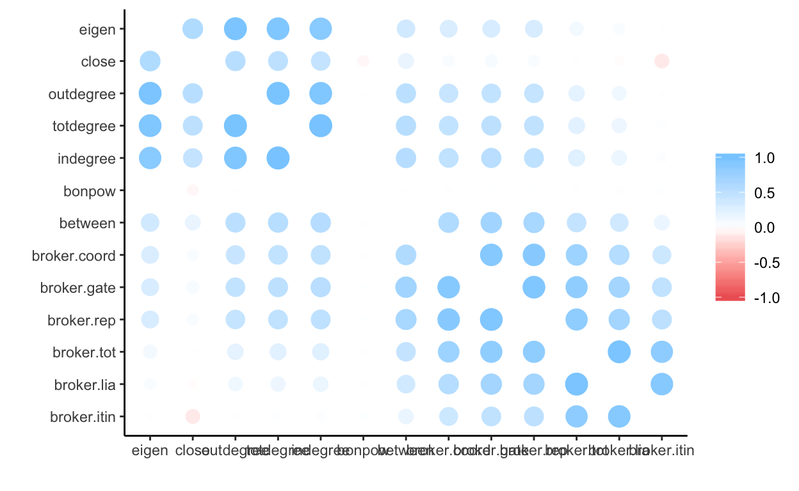

This tutorial will demonstrate use of the R commands used to measure aspects of network brokerage introduced in Week 5’s Lecture:
We will be using several datasets for this exercise. The first two are from the Swiss Climate Data. The new data is the Preference Distance Network. It is an adjacency matrix created for stakeholders in the Swiss climate policy debate, indicating how different node’s policy preferences are. The data includes several node attributes. The Influence network was previously used in weeks 2 and 3, and indicates whether or not the stakeholders nominated each other (or themselves) as influential in the policy debate. The original network contains loops, which are handled better by statnet.
For those who are interested, exercises can also be completed using the GoT book data. This network was scraped from the 5 published books, and a tie indicates the number of times that two characters are mentioned within close proximity of each other. This abbreviated dataset consists only of characters who appear at least 10 times throughout the 5 books, and all ties between characters who co-occur in the text together fewer than 5 times were removed.
climpref, climinfl and gotbook networks. For this exercise, refer to Week 1 tutorial. This will help you get familiar with the dataset you are using.Find network size, type (un/directed, un/weighted, bipartite) and available attributes of vertices and edges
#Find network size and typeclimpref, climinfl and gotbook networks (refer to tutorial 2):#Dyad census, triad census, number and size of components, isolatesUsing tutorials 3 and 4 as a guide–specifically sections 3 and 4 of tutorial 4– create a dataframe of the degree and centrality values that we have already learned about for the three datasets in this tutorial. Call them climinfl.nodes, climpref.nodes and gotbook.nodes. Use the statnet versions of these datasets to attach the values.
#Create each dataframe with the (1) vertex names, (2) total degree values, (3) eigenvector centrality, (4) bonacich power, (5) reflected and (6) derived eigen values to the dataframe
#head(xxx.nodes) for each dataset to view the top 5 valuesThe closeness centrality of a node is defined as the sum of the geodesic distances between that node and all other nodes in a network. Lets start by just inspecting the closeness scores obtained using the two programs. Because geodesic distance depends on whether or not the network is directed, it is important to get this option correctly specified. In statnet, the option that must be specified is gmode=("digraph", "graph"), with “digraph” as the default. In igraph, the option is mode=("in","out", "all", "total") without a clear default option. If the network is undirected, then mode= is ignored. Weights, if available as the weight edge attribute or specified using the weight= option, are used in the calculation of distance.
#calculate closeness centrality: igraph
head(igraph::closeness(climpref.ig))## AA AB AC AD AE AF
## 0.08136697 0.06802721 0.07396450 0.07770008 0.06377551 0.09328358#calculate closeness centrality: statnet
head(sna::closeness(climpref.stat, gmode="graph"))## [1] 0.9705882 0.9705882 1.0000000 0.9705882 0.9428571 0.8918919Once again, the scores returned by the two libraries are very different and it takes some sleuthing to understand why the difference exists.It turns out that while statnet uses the traditional closeness measure by default, igraph uses the inverse closeness measure. When a graph is not connected (i.e., there are multiple components), then closeness is ill-defined as some nodes aren’t reachable from other nodes. An alternative version of closeness using the sum of inverse distances (suminv), can be calculated with a similar conceptual underpinning, but it works even on disconnected graphs, as does the related Gil-Schmidt power index. It is essential to correctly specify whether the graph is directed or undirected. The centralization measure is set with option cmode=("directed", "undirected", "suminvundir", "suninvdir", "gil-schmidt"). Although statnet defaults to the first two, the suninv scores are often going to be preferable - so it makes sense for this to be igraphs default.
#calculate closeness centrality: statnet
head(sna::closeness(climpref.stat, gmode="graph", cmode="suminvundir"))## [1] 0.9848485 0.9848485 1.0000000 0.9848485 0.9696970 0.9393939Unforunately, the scores are still not the same. It could be because the two routines are treating the weights differently: statnet is ignoring weights but igraph is not ignoring weights. To check this, we can rerun the commands and allow statnet to use weights.
#calculate closeness centrality: statnet
head(sna::closeness(climpref.stat, gmode="graph", cmode="suminvundir", ignore.eval=FALSE))## [1] 0.9848485 0.9848485 1.0000000 0.9848485 0.9696970 0.9393939However, it turns out that statnet/sna still ignores the edge weights. This is probably reasonable behavior, unless we are comfortable with the interpretation of weighted geodesic distance. If so, igraph will calculate closeness using weighted geodesic distance.
Using either igraph or statnet, calculate closeness centrality scores for the swiss influence network and gotbook network. Can you also add these scores onto the .nodes dataframes you created above?
#calculate closeness of swiss climate influence
#add measure to climinfl.nodes
#calculate closeness of gotbook
#add measure to gotbook.nodes #calculate closeness of swiss climate influence
#add measure to climinfl.nodes
climinfl.nodes$close<-sna::closeness(climinfl.stat, cmode="suminvdir")
#calculate closeness of gotbook
#add measure to gotbook.nodes
gotbook.nodes$close<-sna::closeness(gotbook.stat, gmode="graph", cmode="suminvundir")In addition to node-level centrality scores, we can also calculate the network level centralization index for closeness centrality measures. The network centralization index must be extracted from the longer list of items returned by the igraph command centr_clo(), with similar options to the ones specified in the igraph closeness() command. Statnet uses a generic centralization index command, centralization(), but the measure desired for the network-level score must be specified as we have seen in prior weeks.
#calculate closeness centralization index: igraph
centr_clo(climpref.ig)$centralization## [1] 0.1027016#calculate closeness centralization index: statnet
centralization(climpref.stat,FUN="closeness",mode="graph")## [1] 0.1027016Calculate betweenness centralization scores for the climate influence and gotbook networks.
#calculate closeness centralization swiss climate influence
#calculate closeness centralization of gotbook#calculate closeness centralization swiss climate influence
centralization(climinfl.stat,FUN="closeness",mode="graph")
#calculate closeness centralization of gotbook
centralization(gotbook.stat,FUN="closeness",mode="graph")Betweenness is defined as the number of geodesics on which a node sits. Remember, a geodesic is (if any) the shortest path(s) between any two nodes.
#calculate closeness centrality: igraph
igraph::betweenness(climpref.ig, directed=FALSE)## AA AB AC AD AE AF
## 102.026840 76.357850 103.026019 87.399910 36.146647 47.228164
## AG AH AI AJ AK AL
## 3.000000 66.271391 17.823571 148.014273 3.638225 243.450863
## AM AN AO AP AQ AR
## 0.000000 0.000000 61.523496 10.836141 0.000000 140.243017
## AS AT AU AV AW AX
## 14.823571 3.638225 10.447098 8.670950 84.198430 60.357850
## AY AZ BA BB BC BD
## 5.638225 39.322181 94.848660 6.882025 78.846551 19.976404
## BE BF BG BH
## 56.522181 75.054913 5.638225 196.703473#calculate closeness centrality:statnet
sna::betweenness(climpref.stat, gmode="graph")## [1] 0.9737208 0.9737208 1.0049708 0.9737208 0.9081966 0.6946260 0.9081966
## [8] 0.9737208 0.9081966 1.0049708 0.6601432 1.0049708 1.0049708 0.9081966
## [15] 0.9737208 0.6946260 0.9081966 1.0049708 0.9081966 0.6601432 0.6601432
## [22] 0.9737208 1.0049708 0.9737208 0.6601432 0.6946260 1.0049708 0.9737208
## [29] 0.9737208 0.6946260 0.6946260 0.9737208 0.6601432 1.0049708It is clear that the difference between the two is likely due to the use of weights to calculate geodesics by igraph - see the tutorial from Week 2 for a discussion. Setting the option weights=NA can avoid weights in igraph.
## AA AB AC AD AE AF
## 0.9737208 0.9737208 1.0049708 0.9737208 0.9081966 0.6946260Using either igraph or statnet, calculate closeness centrality scores for the swiss influence network and gotbook network. Can you also add these scores onto the .nodes dataframes you created above?
#calculate betweenness swiss climate influence
#add measure to climinfl.nodes
#calculate betweenness of gotbook
#add measure to gotbook.nodes #calculate betweenness swiss climate influence
#add measure to climinfl.nodes
climinfl.nodes$between<-
sna::betweenness(climinfl.stat)
#calculate betweenness of gotbook
#add measure to gotbook.nodes
gotbook.nodes$between<-
sna::betweenness(gotbook.stat, gmode="graph")
##View the highest betweenness scores to answer the assignment:
gotbook.nodes%>%
arrange(desc(between))%>%
slice(1:5)In addition to node-level centrality scores, we can also calculate the network level centralization index for betweenness measures. The network centralization index must be extracted from the longer list of items returned by the igraph command centr_betw(). Statnet uses a generic centralization index command, centralization(), but the measure desired for the network-level score must be specified as we have seen in prior weeks.
#calculate betweenness centralization index: igraph
centr_betw(climpref.ig,directed=F)$centralization## [1] 0.0002392681#calculate betweenness centralization index: statnet
centralization(climpref.stat,FUN="betweenness",mode="graph")## [1] 0.0002392681Note that the same centralization index is calculated despite the different treatment of edge weights.
Calculate betweeness centralization scores for the climate influence and gotbook networks.
#calculate betweeness centralization swiss climate influence
#calculate betweeness centralization of gotbook#calculate betweenness centralization swiss climate influence
centralization(climinfl.stat,FUN="betweenness",mode="graph")
#calculate betweenness centralization of gotbook
centralization(gotbook.stat,FUN="betweenness",mode="graph")Constraint is a measure of the redundancy of a node’s connections. It is bound between 0 and 1, with 0 being a complete lack, and 1 being complete redundancy. The constraints() function is only available in igraph, and automatically uses the available weight vector.
constraint(climpref.ig)## AA AB AC AD AE AF AG
## 0.1214445 0.1177037 0.1208077 0.1201464 0.1131914 0.1247609 0.1121688
## AH AI AJ AK AL AM AN
## 0.1201464 0.1131914 0.1233499 0.1088111 0.1289277 0.1187469 0.1121688
## AO AP AQ AR AS AT AU
## 0.1214445 0.1255599 0.1121688 0.1271982 0.1131914 0.1088111 0.1088111
## AV AW AX AY AZ BA BB
## 0.1284224 0.1195113 0.1177037 0.1088111 0.1247609 0.1221421 0.1284224
## BC BD BE BF BG BH
## 0.1256610 0.1258739 0.1247609 0.1255902 0.1088111 0.1284840Using the constraint() function, calculate network constraint scores for the actors in the swiss influence network and gotbook network. Can you also add these scores onto the .nodes dataframes you created above? Can you find the nodes with highest and lowest constraint?
#calculate constraint of swiss climate influence
#add measure to climinfl.nodes
#find the nodes with highest and lowest constraint
#calculate constraint of gotbook characters
#add measure to gotbook.nodes
#find the nodes with highest and lowest constraint#calculate constraint of swiss climate influence
#add measure to climinfl.nodes
climinfl.nodes$constraint<-constraint(climinfl.ig)
#find the nodes with highest and lowest constraint
arrange(climinfl.nodes, constraint)%>%slice(1:5)
arrange(climinfl.nodes, desc(constraint))%>%slice(1:5)
#calculate constraint of gotbook characters
#add measure to gotbook.nodes
gotbook.nodes$constraint<-constraint(gotbook.ig)
#find the nodes with highest and lowest constraint
arrange(gotbook.nodes, constraint)%>%slice(1:5)
arrange(gotbook.nodes, desc(constraint))%>%slice(1:5)Gould-Fernandez brokerage is calculated with respect not only to the pattern of ties between vertices, but also the identities of those vertices as captured in a node attribute. For the climate network, we will use organization type in 5 categories (orgtype5) as the relevant vertex attribute to calculate brokerage. Note that Gould-Fernandex brokerage also requires directed ties. Therefore, Gould-Fernandex brokerage scores can only be calculated for directed networks with vertex attributes, and the brokerage() function is only available in statnet.
names(brokerage(climinfl.stat, cl = climinfl.nodes$orgtype5))## [1] "raw.nli" "exp.nli" "sd.nli" "z.nli" "raw.gli" "exp.gli" "sd.gli"
## [8] "z.gli" "exp.grp" "sd.grp" "cl" "clid" "n" "N"The brokerage function returns a long list of elements, including observed, expected, and standardized brokerage scores. Our primary interest is in the element brokerage(g)$znli. This element is a matrix containing five distinct brokerage scores, capturing the normalized number of triads in which the specified node plays one of the five prototypical Gould-Fernandex brokerage roles: coordinator, itinerant, representative, gatekeeper, and liaison. There is also a total score returned which is calculated as a sum of the five distinct brokerage roles. Total brokerage can be calculated for undirected networks, but not the breakdown of the 5 brokerage roles. The element raw.nli returns the same information but contains the total number of triads instead of the normalized score.
Lets first inspect the Gould-Fernandex brokerage scores, then add these scores to the climinfl.nodes dataframe.
#return matrix of standardized brokerage scores
head(brokerage(climinfl.stat, cl = climinfl.nodes$orgtype5)$z.nli)## w_I w_O b_IO b_OI b_O t
## AA 2.8120657 -2.3370459 -2.0770667 3.53683720 -2.6708233 -0.6034183
## AB -1.6801075 -2.3370459 -1.8959730 -1.98651981 -2.1950526 -2.9770424
## AC 0.9403268 -0.6632986 0.4582448 -0.08503625 -0.6997734 -0.1349398
## AD -1.1185859 -2.3370459 -1.3526920 -1.53378563 -2.3989543 -2.6334916
## AE 0.1916313 -1.2909538 1.0920726 -0.17558309 -1.6513147 -0.6034183
## AF -1.6801075 -0.8725170 -1.0810515 -1.26214512 -1.0396096 -1.6965347#add GF brokerage scores to nodes dataframe
temp<-data.frame(brokerage(climinfl.stat, cl = climinfl.nodes$orgtype5)$z.nli)
climinfl.nodes<-climinfl.nodes %>%
mutate(broker.tot = temp$t,
broker.coord = temp$w_I,
broker.itin = temp$w_O,
broker.rep = temp$b_IO,
broker.gate = temp$b_OI,
broker.lia = temp$b_O)In order to interpret the brokerage scores, let’s look again at the trade100 dataset. The dataframe that you’ve created with the degree, centralization and brokerage scores for the nodes has been created for you in this tutorial. The brokerage scores for this dataset are used with the vertex attribute ‘Continent’. Let’s analyze the first and last 10 nodes of this dataset. To do this, use the arrange function piped though the slice function. We introduced these in Tutorial 3.
##arrange in descending order
trade100.nodes%>%
arrange(desc(broker.tot))%>%
slice(1:10)
##arrange in ascending order (default, doesn't need specification)
trade100.nodes%>%
arrange(broker.tot)%>%
slice(1:10)What do you notice about the states with the highest and lowest brokerage values? Can you make any hypotheses based on these scores?
In tutorial 4, we used histograms to inspect the distribution of centrality scores. Can you inspect the distribution of centrality scores in the trade100 dataset? How about the gotbook dataset or both climate datasets? What similarities and differences do you find?
trade100.nodes%>%
select(-name, -continent) %>%
gather() %>%
ggplot(aes(value)) +
geom_histogram() +
facet_wrap(~key, scales = "free") +
ggtitle("Trade >100 million")
gotbook.nodes%>%
select(-name) %>%
gather() %>%
ggplot(aes(value)) +
geom_histogram() +
facet_wrap(~key, scales = "free") +
ggtitle("GoT Book Co-Mentions")
climpref.nodes%>%
select(-name, -orgtype3, -orgtype5) %>%
gather() %>%
ggplot(aes(value)) +
geom_histogram() +
facet_wrap(~key, scales = "free") +
ggtitle("GoT Book Co-Mentions")
climinfl.nodes%>%
select(-name -orgtype3, -orgtype5) %>%
gather() %>%
ggplot(aes(value)) +
geom_histogram() +
facet_wrap(~key, scales = "free") +
ggtitle("GoT Book Co-Mentions")Also as in Tutorial 4, it is useful to look at the correlations between scores to understand what they are doing in relation to one another. Let’s do this for the trade100 dataset:
correlations<-trade100.nodes %>%
select(totdegree,indegree,outdegree,eigen, bonpow, close, between, broker.tot, broker.coord,broker.itin, broker.rep, broker.gate, broker.lia)%>%
correlate() %>%
rearrange()##
## Correlation method: 'pearson'
## Missing treated using: 'pairwise.complete.obs'fashion(correlations)#visualize correlations
rplot(correlations)
Try creating a similar plot for one or more of the other networks using the correct node measure dataframes.
## climinfl dataset
temp<-climinfl.nodes %>%
select(contains("degree"),starts_with("eigen"), bonpow, starts_with("close"), between, starts_with("broker"))%>%
correlate() %>%
rearrange()
fashion(temp)
rplot(temp)
## climpref dataset
temp<-climpref.nodes %>%
select(contains("degree"),starts_with("eigen"), starts_with("close"), between, starts_with("broker"))%>%
correlate() %>%
rearrange()
fashion(temp)
rplot(temp)
## gotbook dataset
temp<-gotbook.nodes %>%
select(contains("degree"),starts_with("eigen"), bonpow, starts_with("close"), between, starts_with("broker"))%>%
correlate() %>%
rearrange()
fashion(temp)
rplot(temp)